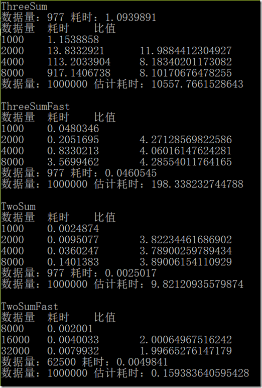

© 2019 《算法（第四版）》C# 题解 | Provided By 沈星繁
搜索解答
目前已完成到 3.1
1.4.41
上次更新：2019-06-20
发现了题解错误/代码缺陷/排版问题？请点这里：如何：提交反馈 。
解答

代码
这里使用了委托来简化代码。
DoublingRatio
using System;
using Measurement;
namespace _1._4._41
{
public delegate int Count(int[] a);
static class DoublingRatio
{
/// <summary>
/// 从指定字符串中读入按行分割的整型数据。
/// </summary>
/// <param name="inputString">源字符串。</param>
/// <returns>读入的整型数组</returns>
private static int[] ReadAllInts(string inputString)
{
char[] split = new char[1] { '\n' };
string[] input = inputString.Split(split, StringSplitOptions.RemoveEmptyEntries);
int[] a = new int[input.Length];
for (int i = 0; i < a.Length; ++i)
{
a[i] = int.Parse(input[i]);
}
return a;
}
/// <summary>
/// 使用给定的数组进行一次测试，返回耗时（毫秒）。
/// </summary>
/// <param name="Count">要测试的方法。</param>
/// <param name="a">测试用的数组。</param>
/// <returns>耗时（秒）。</returns>
public static double TimeTrial(Count Count, int[] a)
{
Stopwatch timer = new Stopwatch();
Count(a);
return timer.ElapsedTimeMillionSeconds();
}
/// <summary>
/// 对 TwoSum、TwoSumFast、ThreeSum 或 ThreeSumFast 的 Count 方法做测试。
/// </summary>
/// <param name="Count">相应类的 Count 方法</param>
/// <returns>随着数据量倍增，方法耗时增加的比率。</returns>
public static double Test(Count Count)
{
double ratio = 0;
double times = 3;
// 1K
int[] a = ReadAllInts(TestCase.Properties.Resources._1Kints);
double prevTime = TimeTrial(Count, a);
Console.WriteLine("数据量\t耗时\t比值");
Console.WriteLine($"1000\t{prevTime / 1000}\t");
// 2K
a = ReadAllInts(TestCase.Properties.Resources._2Kints);
double time = TimeTrial(Count, a);
Console.WriteLine($"2000\t{time / 1000}\t{time / prevTime}");
if (prevTime != 0)
{
ratio += time / prevTime;
}
else
{
times--;
}
prevTime = time;
// 4K
a = ReadAllInts(TestCase.Properties.Resources._4Kints);
time = TimeTrial(Count, a);
Console.WriteLine($"4000\t{time / 1000}\t{time / prevTime}");
if (prevTime != 0)
{
ratio += time / prevTime;
}
else
{
times--;
}
prevTime = time;
// 8K
a = ReadAllInts(TestCase.Properties.Resources._8Kints);
time = TimeTrial(Count, a);
Console.WriteLine($"8000\t{time / 1000}\t{time / prevTime}");
if (prevTime != 0)
{
ratio += time / prevTime;
}
else
{
times--;
}
prevTime = time;
return ratio / times;
}
public static double TestTwoSumFast(Count Count)
{
double ratio = 0;
double times = 2;
// 8K
int[] a = ReadAllInts(TestCase.Properties.Resources._8Kints);
double prevTime = TimeTrial(Count, a);
Console.WriteLine("数据量\t耗时\t比值");
Console.WriteLine($"8000\t{prevTime / 1000}\t");
// 16K
a = ReadAllInts(TestCase.Properties.Resources._16Kints);
double time = TimeTrial(Count, a);
Console.WriteLine($"16000\t{time / 1000}\t{time / prevTime}");
if (prevTime != 0)
{
ratio += time / prevTime;
}
else
{
times--;
}
prevTime = time;
// 32K
a = ReadAllInts(TestCase.Properties.Resources._32Kints);
time = TimeTrial(Count, a);
Console.WriteLine($"32000\t{time / 1000}\t{time / prevTime}");
if (prevTime != 0)
{
ratio += time / prevTime;
}
else
{
times--;
}
prevTime = time;
return ratio / times;
}
}
}
主函数
using System;
using Measurement;
namespace _1._4._41
{
/*
* 1.4.41
*
* 运行时间。
* 使用 DoublingRatio 估计在你的计算机上用 TwoSumFast、TwoSum、ThreeSumFast 以及 ThreeSum 处理一个含有 100 万个整数的文件所需的时间。
*
*/
class Program
{
static void Main(string[] args)
{
int[] a = new int[977];
Random random = new Random();
for (int i = 0; i < 977; ++i)
{
a[i] = random.Next(977) - 489;
}
// ThreeSum
Console.WriteLine("ThreeSum");
double time = DoublingRatio.TimeTrial(ThreeSum.Count, a);
Console.WriteLine($"数据量：977 耗时：{time / 1000}");
double doubleRatio = DoublingRatio.Test(ThreeSum.Count);
Console.WriteLine($"数据量：1000000 估计耗时：{time * doubleRatio * 1024 / 1000}");
Console.WriteLine();
//// ThreeSumFast
Console.WriteLine("ThreeSumFast");
time = DoublingRatio.TimeTrial(ThreeSumFast.Count, a);
doubleRatio = DoublingRatio.Test(ThreeSumFast.Count);
Console.WriteLine($"数据量：977 耗时：{time / 1000}");
Console.WriteLine($"数据量：1000000 估计耗时：{time * doubleRatio * 1024 / 1000}");
Console.WriteLine();
//// TwoSum
Console.WriteLine("TwoSum");
time = DoublingRatio.TimeTrial(TwoSum.Count, a);
doubleRatio = DoublingRatio.Test(TwoSum.Count);
Console.WriteLine($"数据量：977 耗时：{time / 1000}");
Console.WriteLine($"数据量：1000000 估计耗时：{time * doubleRatio * 1024 / 1000}");
Console.WriteLine();
// TwoSumFast
// 速度太快，加大数据量
a = new int[62500];
for (int i = 0; i < 977; ++i)
{
a[i] = random.Next(62500) - 31250;
}
Console.WriteLine("TwoSumFast");
time = DoublingRatio.TimeTrial(TwoSumFast.Count, a);
doubleRatio = DoublingRatio.TestTwoSumFast(TwoSumFast.Count);
Console.WriteLine($"数据量：62500 耗时：{time / 1000}");
Console.WriteLine($"数据量：1000000 估计耗时：{time * doubleRatio * 16 / 1000}");
Console.WriteLine();
}
}
}